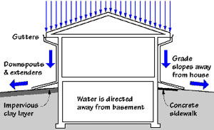

地下室漏水，人们可能马上想到的就是地基有裂缝了，或者是外墙防水层失效了。其实，地下室进水只有10%来自地下，而90%都是由于地表水（如雨水或雪水）排水不当造成。
屋顶的排水沟(gutter)和排水管(downspout)虽然是房屋构造中的小小组件，但却对在整套房屋的排水，防止地下室漏水至关重要，也是验房师验屋的重点。有经验的验房师一般能从排水沟和排水管就能预判断出您的地下室或者半地下空间(crawlspace)是否漏水或阴潮。

其实,排水沟和排水管的检查和维护都是比较直观和相对容易的，业主如果愿意，完全可以自己检查清理和维护，这也是也业主维护保养房屋中每年都应该实施的工作。
排水沟的安装
我们常见的排水沟(gutter)主要有两种，内嵌式和外挂式。内嵌式是在修建屋顶和铺设屋顶 材料时在房檐和檐板间建一沟槽，而后以金属、合成材料作为防水内衬接水疏水，本地常见的内衬材料为(EPDM, 改性沥青材料等)；外挂式一般为金属沟槽直接固定在檐板上收集屋顶下水、导水。
排水管的安装
排水管(Downspout)是将排水沟的水排掉的通道，分为地下和地上排水两种，主要材料为金属（镀锌铁或铝材）或者 pvc 塑料，通常在房檐每 30-35尺的长度要设定一个下水管，并且至少在从房檐到地面的垂 直距离上有一个固定件使其在墙体上牢固。由于地下排水堵塞很难清理，因此在验房中验房师都建议业主截断地下排水，改为地 上直排，同时排水距离建议要远离房基6尺以上。
排水沟和排水管的维护
如图示排水沟内的杂物堵塞是最为常见的问题，也容易解决，业主应该每年秋季检查清理， 以免堵塞、积水，尤其是房子周围有高过屋顶的大树。否则其后果是积水从排水沟溢出，直接顺外墙流下，进入地基外墙。这不但侵蚀外墙材料，而且大大增加了地下室进水的可能；同时，尤其是冬天，也可能造成雪水渗透过防水材料造成屋顶漏水。

对于外挂式的排水沟，由于其是由多个金属构件现场焊接、粘结而成，四季冷暖交替加上雨水雪水负荷，长期使用可能出现开焊、粘结剂老化，因此修缮补漏是必须的。不论是内嵌式还是外挂 式的排水沟，都有可能因长期使用造成其排水坡度变化，从而导致积水而不能从落水管排出，重新调 整其坡度也在所难免。 同时，冬天过后，业主要注意观察整个导水槽是否因为冬季大雪与冰坝造成下垂。因为一旦导水槽下垂，到雨季时，雨水就会从下垂的地方往外水帘瀑布式的泻漏，这往往是夏天潮湿地下室的重要原因之一。同时要检测导水管下端管口与横向延长管之间的连接部位是否经历这个寒冬的洗劫而松动或者脱落。
可是有些房子阁楼有足够多的保温棉，为什么也会看到冰坝现象呢？这可能是因为你在升级保温棉的时候忘了在保温棉下铺一层塑料膜 （Vapor/Moisture Barrier）。这层塑料膜叫防潮膜，它可以有效的阻挡延缓室的热潮空气进入阁楼，从而引发冰坝。注意：这层塑料膜一定要连续不能有缝隙，包括接口处，如：穿线洞口，管道口，浴室内抽风扇边缘的接口，进入阁楼的洞口，烟囱的接口，天窗的接口，以及门窗与墙壁间的缝隙。否则这层防水膜就会失去作用。
此外，阁楼的通风也对引发冰坝的形成至关重要。你在升级保温棉的时候，切忌不要阻挡屋檐处的通风口(Soffits). 如果阁楼有良好的通风，那么冰坝发生的可能性就会大大降低。

总之，排水沟和排水管这两个房屋组件不难检查维护，但也最容易出现状况，业主注意日常打理，及时维修就能避免大的问题出现和昂贵的花费。
最后，无论您已置业，还是正准备买房,一定要对自己的房屋进行相应的检测，就像每年对自己的身体进行体检一样，聘请专业的检测团队，做到对自己的房子心中有数，发现问题及时维修和保养，未雨绸缪，防患于未然。
版权声明：本网站所有内容，包括文字和音频，版权均属「陈博士验房」所有。任何个人、机构、组织未经本网允许，不得复制、改编、转发本网站内容到任何其它平台，违者将追究法律责任.